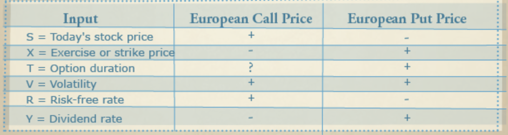

Finance¶
Net Present Value (NPV)¶
“The present value of a sequence of cash flows is the equivalent value of those cash flows in today’s dollars. To compute that value, you need to define a per-period interest rate, or discount rate, expressed as \(r\). Given \(r\), you can assume that \(1 will grow in one period to \)(1 + r)\(. For example, if \)r = 10%\(, then \)1 today will grow in one period to \(\$1.10\). Dividing both sides of this equation by \((1 + r)\) yields \(\$1/1+r\) today = $1 one period from today.”
“In order to convert \(K received n periods from now to an equivalent present value, divide by \)(1 + r)^n$.”
“Net Present Value (NPV) - The value of a sequence of cash flows expressed in today’s dollars.”
“Suppose that for time \(t = 0, 1, 2, ...n,\) at time \(t\) you receive a cash flow of \(c_t\). If the discount rate per period is \(r\), then the present value of these cash flows may be written as \(\sum_{t=0}^{n} \frac{c_t}{(1+r)^t}\) where NPV stands for net present value.”
“An investment with an NPV > 0 increases the value of the company, whereas an investment with an NPV < 0 decreases the value of the company.”
Internal Rate of Return¶
For NPV calculation, discount rate is required which is difficult to estimate.
Internal Rate of Return (IRR) does not require discount rate.
“Internal Rate of Return (IRR) - The rate of return that makes the Net present value (NPV) of a sequence of cash flows equal to 0. Some streams of cash flows have multiple IRR’s while other streams of cash flows have no IRR.”
Some sequence of cash flows can have multiple IRRs while some may not have any.
“A sequence of cash flows will have an \(NPV > 0\) if the IRR exceeds the discount rate \(r\). A sequence of cash flows will have an \(NPV < 0\) if the IRR is less than the discount rate \(r\).”
Payback Criteria¶
“Payback Criteria - The amount of time needed for an investment to pay back its initial cash outflow.”
“To use payback criteria, you begin by finding an investment’s payback period, which is the time needed to pay back the investment. The investment should be accepted if the payback period is less than a length of time that the investor finds acceptable.”
Payback criteria ignores the time value of money.
NPV and IRR are considered to be better than payback period since they both account for the time value of money.
Future Value¶
“Future Value - Under the assumption of a given rate of return, future value measures the value of a cash flow moved forward in time. For example, if we earn \(8\%\) per year on our investment the future value of \(\$100\) in two years would equal \(100(1.08)^2\).”
“The future value of an amount \(K\), at \(n\) periods in the future when the per-period interest rate is \(r\), is expressed as \(FV = K(1 + r)^n\).”
Annuities¶
An anuity is a stream of cash flows that pays a fixed amount of money \(C\) at times one, two, though N.
“If the interest rate is \(r\), and you receive \(\$C\) at times \(1, 2,... N\), the present value of the annuity is equal to \(C(\frac{1}{r} - \frac{1}{r(1+r)^N})\).”
Perpetuities¶
“Perpetuity - An infinite sequence of equal periodic cash flows.”
If the interest rate is \(r\), and you receive \(\$C\), the present value of perpetuity can be given by \(C/r\).
Growing Perpetuity¶
“The growing perpetuity model (often called the Gordon growth model) assumes an initial cash flow of \(\$C\) one period from now, with cash flows growing at a rate \(g\) per period thereafter. We assume that cash flows are discounted at a rate \(r\) per period. We require that \(r > g\), or else the present value of the growing perpetuity would be infinite. The growing perpetuity model is often used in finance to aid in valuation of a business or a share of stock.”
Value of growing perpetuity can be given as \(C/(r-g)\).
Compound Interest¶
“Compounding of Interest: Semi-Annual and Quarterly - Interest (based on the sum of the initial investment and prior interest earned) is earned at periodic time intervals. If interest is earned semiannually, for example, then interest is received twice per year: at the beginning of the year and the middle of the year.”
“Compounding of Interest: Continuous - Interest (based on the sum of the initial investment and prior interest earned) is earned at every instant of time.”
Considering a rate of interest of \(r\), an initial invested amount of \(P\), a time period of \(t\), and frequency of compounding be \(m\), compound interest can be given by \(C.I. = P(1+\frac{r}{m})^{mt}\). In case of continuous compounding, \(C.I. = Pe^{rt}\).
“Effective Interest Rate - The simple rate of interest (usually expressed on an annual basis) which yields the same amount of money in a year that would be obtained from a specified type of compounded interest. For example, a compound interest rate of \(10\%\) annually has an effective annual interest rate of \(10.52\%\).”
Basic Bond Math¶
“Companies and governments often raise money by selling bonds to investors. Investors pay corporations money today, and in return the investors receive cash flows in the future.”
“Zero Coupon Bond - A bond that pays the owner a single payment of the date the bond matures.”
“Face Value - The amount of money (excluding coupons) paid to a bondholder on the bond’s maturity date. The face value is usually a round number such as \(100 or \)1000.”
Considering the initial value of \(\$F\), rate of interest as \(r\) and time period of \(N\) years, the present value is given by \(\frac{F}{(1+r)^N}\).
“Consider a bond that pays an annual coupon of \(C at the end of each year until maturity and also pays a face value of \)F at maturity N years from now. Assume a required annual rate of return r, a fair price for the bond with annual coupons is “ $\( C\bigg(\frac{1}{r} - \frac{1}{r(1+r)^N} \bigg) + \frac{F}{(1+r)^N} \)$
“The yield of a bond is simply the interest rate r that makes the present value of the bond’s payments equal to the price of the bond.”
“For a bond with coupons, the yield is still defined as the interest rate that makes the present value of the cash flows equal to the bond’s price.”
“A bond is simply a stream of cash flows. The yield of the bond is the interest rate that makes the NPV of the bond’s cash flows (counting the price of the bond as a negative cash flow) equal to zero. Therefore, you can find the yield of a bond simply by applying the IRR function to the bond’s cash flows.”
CAGR: Compund Annual Growth Rate¶
“Compound Annual Growth Rate (CAGR) - The per period rate of growth that describes the rate at which an investment would have grown if it grew at a steady rate. For example, if a company’s profits have a five year CAGR of \(6\%\), then $1 invested in the company for five years would grow to 1.065.”
“Suppose that you are given annual returns \(R_1, R_2 ,... R_n\) on an investment. The compound annual growth rate of this stock is expressed as \(\sqrt[n]{(1+R_1)(1+R_2) .... (1+R_n)} - 1\).”
“The geometric mean of n numbers is simply the nth root of their product.”
“To find the CAGR of an investment, begin by calculating for each year (1 + annual return). Then, find the geometric mean of the (1 + annual return) sequence and subtract 1.”
Option Pricing¶
“A stock option permits — but does not require — the holder to buy (in the case of a call option) or sell (in the case of a put option) a share of stock. The price at which a share of stock can be bought or sold is called the strike or exercise price. The expiration date specifies the last date an option can be exercised.”
“Call Option - An option that gives the owner the right to buy an asset (usually a stock) at a given price.”
“Put Option - An option that gives the owner the right to sell an asset (usually a stock) at a given price.”
“Strike Price - The price at which a call option to buy or a put option to sell may be exercised.””
“A call option allows the holder to buy a share of, say, Cisco for a given amount x, called the strike or exercise price, within a period of T years. T represents the duration of the option, and the last day on which the option can be exercised is the expiration date.”
“A European call option can only be exercised on the expiration date, whereas an American call option can be exercised on or before the expiration date.”
“Note that the higher the strike price, the smaller the call price. “
“Note that if the final stock price is less than or equal to the exercise price (here designated x), the call cash flows are $0, whereas if the final stock price is greater than x, the cash flows follow a line of slope 1.”
“Note that if the final stock price is greater than or equal to the exercise price, the put cash flows are $0, whereas if the final stock price is less than x, the cash flows follow a line of slope −1.”
“Hedging - An investment strategy that reduces an individual’s or an organization’s risk. For example, buying put options on the market would hedge the risk a mutual fund faces that their investments in the market will drop in value.”
High-tech start-ups often use options to motivate their employees.
“In the early 1970s, Fischer Black, Robert Merton, and Myron Scholes came up with the famous Black–Scholes option pricing formula, which is used by many traders to approximate fair price for put and call options.”
“Volatility - A measure of the spread or uncertainty in a stock’s daily returns.”
To compute the Black–Scholes price for a European put or call option, the following inputs are required.
S = today’s stock price.
T = duration of option in years.
X = exercise or strike price for option.
R = risk-free rate (expressed as a continuously compounded rate per year).
V = annual volatility of stock. A stock’s volatility is similar, but not identical, to the standard deviation (expressed on an annual basis) of the stock’s daily percentage returns.
Y = percentage of stock value paid annually in dividends.
The Black–Scholes formula for pricing a European put or call, $\( d1 = \frac{Ln\bigg(\frac{S}{x}\bigg) + \bigg(R-Y+\frac{V^2}{2}\bigg)t}{V\sqrt{T}} \)\( \)\( d2 = d1 - V\sqrt{T} \)\( \)\( C = Se^{-Yt}N(d_1) - xe^{-Rt}N(d_2) \)$
\(C\) is the call price. \(N(x)\) is the cumulative normal probability for a normal random variable that a mean of 0 and a \(\sigma\) of 1.
“Comparative Statics - The determination of how a formula changes when inputs to the formula are changed is known as comparative statics.” 
“If we increase today’s stock price, larger stock prices become more likely and smaller stock prices become less likely. Because call options pay off more as the stock price on the expiration date increases, the value of a European call increases as today’s stock price increases. Conversely, because a put option pays off more as the stock price on the expiration date decreases, the value of a European put decreases and today’s stock price increases.”
“If the stock pays no dividends, then the longer the duration of the option, the higher the European put or call price. That is because in the absence of dividends the stock price is likely to move more over a longer period of time than over a shorter period of time. Because options pay off more on large movements (up for calls and down for puts), European options increase in value as their duration increases. If a stock pays dividends in, say, ten weeks, then a three-month call might be worth less than a two-month call because the payment of the dividend in ten weeks will depress the stock price, thereby lessening the value of the call option.”
“More volatility increases the chance of a very high or very low stock price on the expiration date. Because a put or call option pays off on extreme stock price values, an increase in volatility will increase both the European call and put price.”
“As interest rates increase, investors will demand higher returns on stocks, which typically drives up the stock price at the expiration date. This is good for a call option and bad for a put option. Therefore, an increase in the risk-free rate will increase the value of a European call and decrease the value of a European put.”
“In general, the value of a stock is thought to reflect the NPV of the future cash flows generated by the stock. If a stock pays out more in dividends, it has less to invest to generate future profits, so the NPV of future cash flows will drop. That will, in turn, cause a drop in future stock prices, resulting in a decrease in the price of a European call option and an increase in the price of a European put option.”